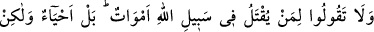
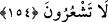

– “Görüyoruz ki siz sür’atlice cennete doğru gitmektesiniz. Sizler kimlersiniz?”
diye sorarlar. Onlar da:
– “Biz ehl-i fazîletiz.” derler. Melekler:
– “Sizi fazîletli kılan nedir?” diye tekrar sorunca onlar:
– “Biz zulme uğrayınca sabrettik ve bize kötülük yapılınca affettik.” diye karşılık
verirler. Sonra onlara:
“Varın cennete girin. Böyle amel edenlerin mükâfatı ne güzeldir.” denilir.
Sonra başka bir münâdî:
– “Ehl-i sabır nerededir?” diye seslenir.
Bir grup insan kalkıp cennete doğru sür’atlice yürürler. Melekler onları karşılayıp:
– “Biz sizin koşarak cennete doğru gittiğinizi görüyoruz. Sizler kimlersiniz?” diye
sorarlar. Onlar da:
– “Biz sabır ehliyiz.” derler. Melekler:
– “Siz neye sabrettiniz?” diye tekrar sorunca onlar:
– “Biz Allah’a tâat ve günahlardan kaçınmaya sabrettik.” derler. Sonra onlara:
“Cennete girin.” denilir.
Sonra tekrar bir münâdî:
– “Allah için sevişenler nerede?” deyince bir grup insan kalkıp koşarak cennete
doğru giderler. Melekler onları karşılayıp:
– “Sizler kimlersiniz?” diye sorunca onlar:
– “Bizler Allah için sevişenleriz.” derler. Melekler:
– “Sizin Allah için olan sevginiz nedir?” diye sorunca onlar:
– “Biz Allah için birbirimizi severdik.” diye karşılık verirler ve cennete girerler.[39]
Bu hadis-i şerif Nüzhetü’l-Kulûb isimli eserde zikredilmektedir.
154. Allah yolunda öldürülenlere “ölüler” demeyin. Bilakis onlar diridirler, lâkin
siz anlayamazsınız.
Bu âyet-i kerîme, Bedir şehîdleri hakkında nâzil olmuştur. Bunlar altısı
muhâcirlerden, sekizi de ensârdan olmak üzere on dört kişiydiler. İnsanlar, Allah
yolunda savaşıp öldürülen kimse için “Falan ölüp dünyâ nimetlerinden ve
lezzetlerinden mahrûm oldu.” diyorlardı. Bu sebeple Allah Teâlâ: Allah’ın rahmetine
ermek ve sevâbını kazanmak için O’nun yolunda cihâd ederken öldürülenlere “ölüler”
demeyin. Onlar, yaptıkları amellerin sevâbı kesintiye uğramaksızın devam ettiğinden
dolayı hükmen diriler gibidir. Çünkü onlar Allah’ın dinine yardım etmek için
öldürüldüler. Allah’ın dîni yeryüzünde ayakta kaldıkça ve Allah yolunda savaşan tek